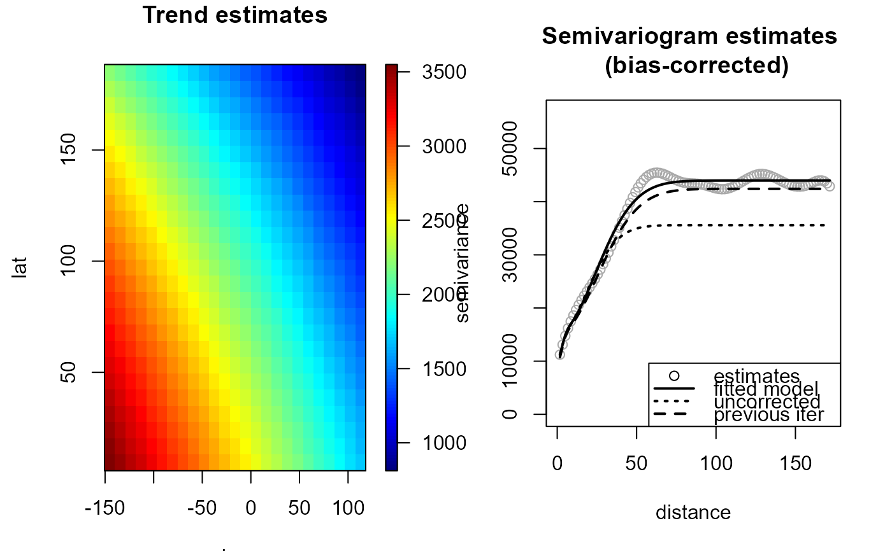

Fits a nonparametric (isotropic) geostatistical model
(jointly estimates the trend and the variogram) by calling
locpol, np.svariso.corr (or np.svariso ) and
fitsvar.sb.iso iteratively.
At each iteration, the trend estimation bandwith is updated
by a call to h.cv.
np.fitgeo(x, ...) # S3 method for default np.fitgeo(x, y, nbin = NULL, iter = 2, h = NULL, tol = 0.05, set.NA = FALSE, h.svar = NULL, corr.svar = TRUE, maxlag = NULL, nlags = NULL, dk = 0, svm.resid = FALSE, hat.bin = corr.svar, warn = FALSE, plot = FALSE, ...) # S3 method for locpol.bin np.fitgeo(x, svm, iter = 1, tol = 0.05, h.svar = svm$esv$locpol$h, dk = 0, corr.svar = TRUE, svm.resid = FALSE, hat.bin = corr.svar, warn = FALSE, plot = FALSE, ...) # S3 method for fitgeo np.fitgeo(x, iter = 1, tol = 0.05, h.svar = x$svm$esv$locpol$h, dk = x$svm$par$dk, corr.svar = TRUE, svm.resid = FALSE, hat.bin = corr.svar, warn = FALSE, plot = FALSE, ...)
Arguments
| x | a (data) object used to select a method. |
|---|---|
| ... | further arguments passed to |
| y | vector of data (response variable). |
| nbin | vector with the number of bins on each dimension. |
| iter | maximum number of interations (of the whole algorithm). |
| h | initial bandwidth matrix for trend estimation
(final bandwith if |
| tol | relative convergence tolerance (semivariogram). |
| set.NA | logical. If |
| h.svar | bandwidth matrix for variogram estimation. |
| corr.svar | logical; if |
| maxlag | maximum lag. Defaults to 55% of largest lag. |
| nlags | number of lags. Defaults to 101. |
| dk | dimension of the Shapiro-Botha variogram model (see |
| svm.resid | logical; if |
| hat.bin | logical; if |
| warn | logical; sets the handling of warning messages in bandwith selection ( |
| plot | logical; if |
| svm | (fitted) variogram model (object of class
|
Value
Returns an object of class fitgeo
(extends np.geo). A locpol.bin object
with the additional (some optional) 3 components:
fitted variogram model (object of class
fitsvar).
(if requested) fitted residual variogram model (object of class
fitsvar).
model residuals.
Details
Currently, only isotropic semivariogram estimation is supported.
If parameter h is not specified,
h.cv is called with the default values (modified CV) to set it.
If parameter h.svar is not specified,
is set to 1.5*h.cv.svar.bin()$h.
Setting corr.svar = TRUE may be very slow (and memory demanding) when the number of data is large
(note also that the bias in the residual variogram decreases when the sample size increases).
See also
Examples
# Uncorrected variogram estimator geomod0 <- np.fitgeo(aquifer[,1:2], aquifer$head, iter = 1, corr.svar = FALSE) plot(geomod0)# Additional iteration with bias-corrected variogram estimator geomod1 <- np.fitgeo(geomod0, corr.svar = TRUE, svm.resid = TRUE) plot(geomod1)